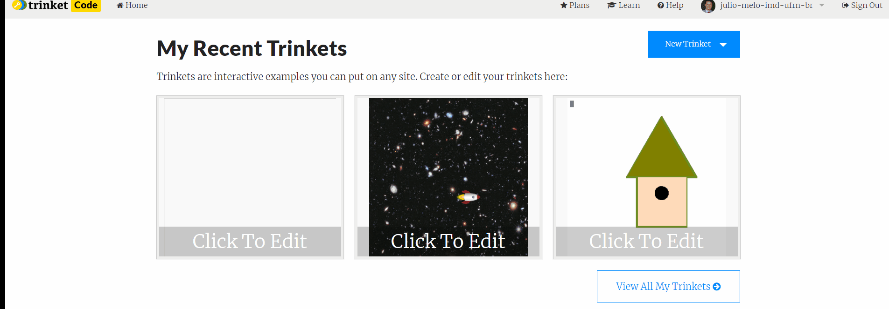

Usar o editor de código em blocos do trinket não é difícil, siga os passos abaixo:

No editor de código você tem opções como salvar, adicionar a algum diretório, deletar e compartilhar seu codigo via trinket.io.
O editor de código tem alguns elementos principais, que são o toolbox, a área de edição de código, a área do terminal e plots e o código em python gerado.
Para as aulas iniciais não estaremos interessados no código em python gerado, porém, fique à vontade para inspecionar o código se tiver curiosidade.
Contém os blocos de código que usaremos nos nossos programas. Cada bloco está organizado em seções específicas dependendo de sua funcionalidade.
Neste caso foram mostrados os conjuntos:
Outros conjuntos também estão disponíveis, porém não serão usados nas aulas iniciais.
Nesta área é possível editar o código em blocos arrasttando os blocos desejados do toolbox ou duplicando os blocos que já estiverem na área. É possível deletar blocos arrastando-os para dentro do toolbox ou usando a lixeira na parte inferior direita. Comandos básicos de cópia e deleção também são possíveis como nos editores de texto: ctrl + c/v, ctrl + z ou delete.

Ao clicar com o botão direito em cima de um bloco um conjunto de opções é mostrado:

A execução do código é feita na area do terminal/plot. Apenas ponha seus blocos na área de edição e clique no botão "Run"


É possível combinar a saída com gráficos e a saída textual. Apenas use blocos do conjunto Turtle e os blocos de texto do conjunto Text. Você também pode verificar como ficou o código em pythom em qualquer um dos casos usando a aba de View Code na área de do Terminal/Plotting.
É possível copiar códigos compartilhados do trinket de outra pessoa usando o botão "remix" que fica a parte superior de códigos compartilhados. Use o exemplo abaixo para copiar para sua pasta "My Trinkets" e edite usando sua conta do trinket.